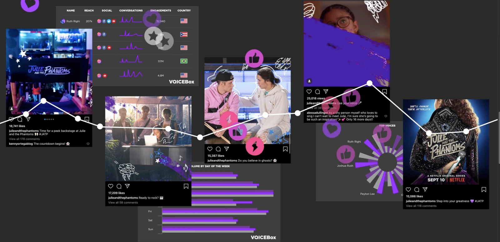
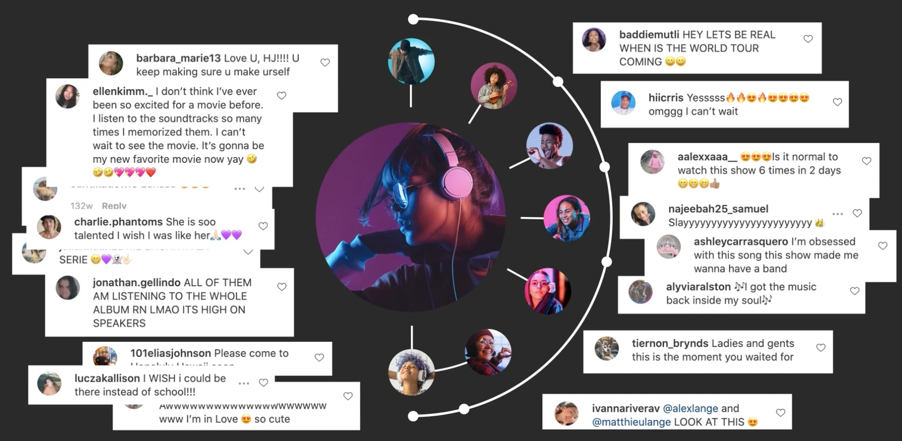

Define the fandom neighborhood
Identify relevant series, cast members, creators and neighboring communities.
Netflix · Social data & insights · Team contribution
Demographics could name the audience. The launch needed to understand the creators, conversations and rituals that made young fandom move.
02 Approach
The research became a practical brief for channel focus, cast storytelling, creator partnerships and content direction—not a listening report left on a shelf.


Identify relevant series, cast members, creators and neighboring communities.
Use profiling and image recognition to separate young-teen signals from the wider conversation.
Turn topics, sentiment and participation patterns into media, content and influencer questions.
Takeaway
Before choosing how to speak, learn how the audience already belongs.